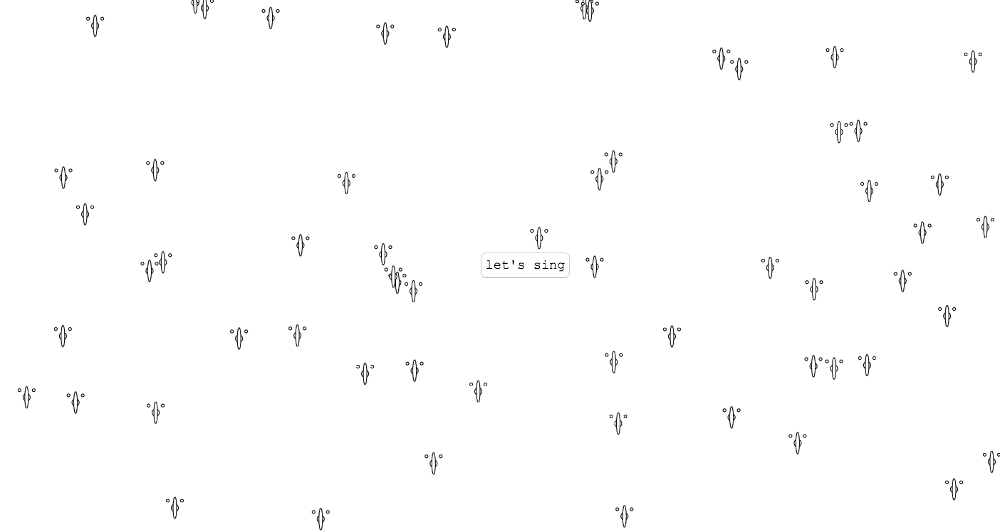
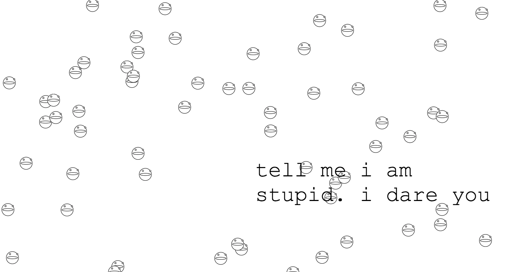
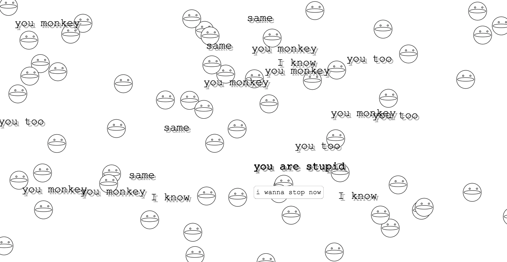

This silly noise maker was created to produce a more amusing, mischievous, and less practical application of voice technology: a nonsense duet between the user and computer!
This project utilizes the p5 and p5 speech libraries.
The start screen portrays a background with a button in the center prompting the user to start "singing".
Once the button is pressed, music starts to play and the user is challenged to call the persona stupid.
The p5 speech library's speech recognition was programmed to listen for the phrase "you are stupid". When the phrase is spoken, a random sound chosen from a list of sounds will appear and loop. The computer will also retort back with its own jibe (ex. "you monkey"), which appears on the screen. The phrase can be repeated over and over to elicit more sounds, leading the user to become a part of the visual and audio cacaphony. The size of the background singers is determined by the volume of the audio.
A video of a playthrough is shown below. Make sure to have your sound on!
Stupid Duet Playthrough